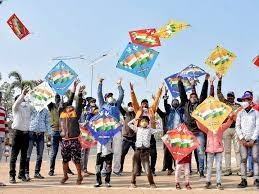

A festival of tradition and joy
Ganesh Chaturthi (ISO: Gaṇeśa Caturthī), also known as Vinayak Chaturthi (Vināyaka Caturthī) or Ganeshotsav (Gaṇeśōtsava), is a Hindu festival that tributes Hindu deity Ganesha.[3]
The festival is marked with the installation of Ganesha's clay murtis (devotional representations of a deity) privately in homes and publicly on elaborate pandals (temporary stages). Observances include chanting of  Vedic hymns and Hindu texts, such as prayers and vrata (fasting).[3] Offerings and prasada from the daily prayers, that are distributed from the pandal to the community, include sweets such as modak as it is believed to be a favourite of Lord Ganesha.[4][5]
The festival ends on the tenth day after start, when the Murti is carried in a public procession with music and group chanting, then immersed in a nearby body of water such as a river or sea, called visarjana on the day of Ananta Chaturdashi. In Mumbai alone, around 150,000 Murtis are immersed annually.[6]
Thereafter the clay Murti dissolves and Ganesha is believed to return to his celestial abode.[3][7]
The festival celebrates Ganesha as the God of New Beginnings and the Remover of Obstacles as well as the god of wisdom and intelligence[8][9] and is observed throughout the Indian subcontinent by Hindus, especially in the img
states such as Maharashtra, Madhya Pradesh, Karnataka, Kerala, Odisha, Telangana, Andhra Pradesh, Tamil Nadu and Goa, as well as Nepal.[3][10]
Ganesh Chaturthi is also observed by the Hindu diaspora elsewhere such as in Australia, New Zealand, Canada, Singapore, Malaysia, Trinidad and Tobago, Guyana, Suriname, other parts of the Caribbean, Fiji, Mauritius, South Africa,[11] the United States, and Europe. In the Gregorian calendar, Ganesh Chaturthi falls between 22 August and 20 September every year.[7][12][13]
Although the origin of Ganesh Chaturthi remains unknown, it became increasingly popular after a public celebration was initiated by the prominent Anti-Colonial Freedom Fighter, Lokamanya Bal Gangadhar Tilak, in Maharashtra in the year 1893. It was a means to form a "Hindu nationalist identity" and rebel against British rule.[14] Reading of texts, feasting, athletic and martial arts competitions are held at public venues.[15]

hough not alluding to the classical form of Ganapati, the earliest mention of Ganapati is found in the Rigveda. It appears twice in the Rigveda, once in shloka 2.23.1, as well as in shloka 10.112.9.[16][17][18]
 Both of these shlokas imply a role of Ganapati as "the seer among the seers, abounding beyond measure in food presiding among the elders and being the lord of an invocation", while the shloka in mandala 10 states that without Ganapati "nothing nearby or afar is performed without you", according to Michael.[16][19]
Both of these shlokas imply a role of Ganapati as "the seer among the seers, abounding beyond measure in food presiding among the elders and being the lord of an invocation", while the shloka in mandala 10 states that without Ganapati "nothing nearby or afar is performed without you", according to Michael.[16][19]
However, it is uncertain that the Vedic term Ganapati which literally means "guardian of the multitudes", referred specifically to later era Ganesh, nor do the Vedic texts mention Ganesh Chaturthi.[20]
It appears in post-Vedic texts such as the Grhya Sutras and thereafter ancient Sanskrit texts such as the Vajasaneyi Samhita, the Yajnavalkya Smriti and the Mahabharata mention Ganapati as Ganesvaras and Vinayak. Ganesh appears in the medieval Puranas in the form of "god of success, obstacle remover".
The Skanda Purana, Narada Purana and the Brahma Vaivarta Purana, in particular, profusely praise him. [21] Beyond textual interpretations, archaeological and epigraphical evidence suggest Ganesha had become popular, was revered before the 8th century CE and numerous images of him are traceable to the 7th century or earlier.
For example, carvings at Hindu, Buddhist, and Jain temples such as at the Ellora Caves, dated between the 5th and 8th-century show Ganesha reverentially seated with major Hindu goddess (Shakti).[22]